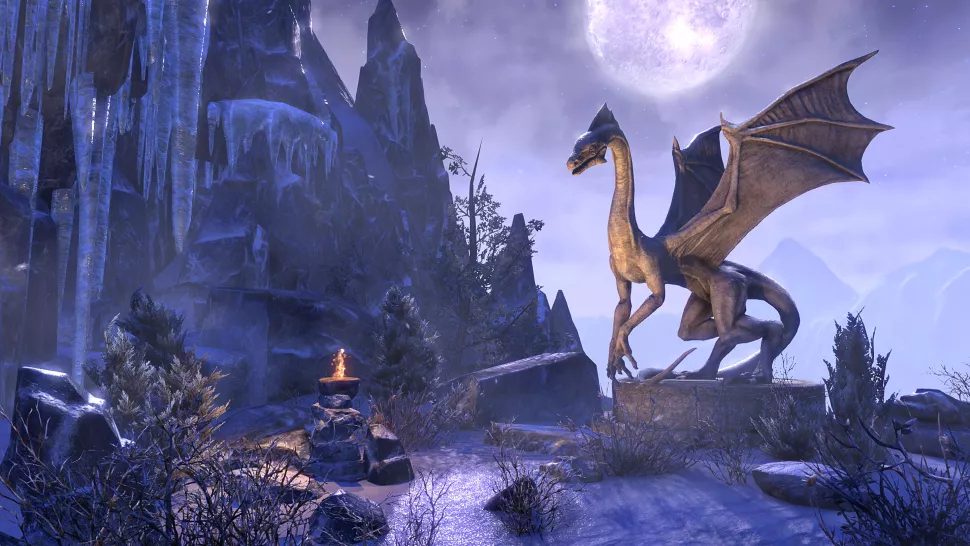

More information
The Elder Scrolls VI is confirmed
While we knew that The Elder Scrolls 6 would come eventually, we've been waiting a long time for Bethesda to announce that it's in the batting order, and is actively being developed. That finally happened, as Todd Howard himself introduced the teaser at E3 2018. There's not much to it, but it's enough to get excited.
The Elder Scrolls 6 could be called "Redfall"
So what is Redfall? It's not a place in Tamriel, at least that we know of. This is all speculation mind, but some folks on Reddit are theorizing that Redfall could potentially be a plague. A particular quest in Skyrim follows an affliction that causes victims to projectile vomit and develop red skin. The plague is tied to Daedric prince Peryite who owns the domains of (among other things) pestilence. Late in the quest an NPC mentions "returning to High Rock" which might suggest the plague began there. Maybe even in the city of Daggerfall.
